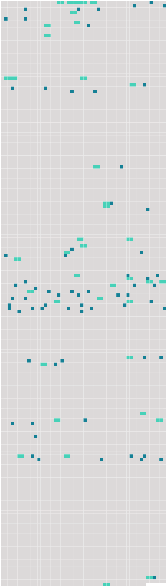

Longueur nb maillons : 104 mentions |
 |
Et le temps venu, Douce, vêtue comme une écolière, se trouva en face de [Mlle Charmes] , [l'institutrice du village de Bléroux] [Mlle Charmes] gardait à quarante ans passés un corps bien fait et de beaux cheveux châtains. Seul [son] visage était un peu fané et comme tourmenté. [1 phrases]
[Elle] avait des gestes autoritaires et précis ; et [ses] yeux, de la même couleur que [ses] cheveux, semblaient s'appuyer sur vous, et vous presser comme deux mains.
[Elle] regarda l'enfant, puis [elle] dit : [4 phrases]
Et comme [l'institutrice] ne paraissait pas convaincue, il reprit, la voix plus dure :
Son regard, qu'il tenait fixé sur sa petite fille, devint plus dur encore lorsqu'il ajouta : [4 phrases]
Il fallut que [Mlle Charmes] vînt prendre Douce à l'épaule pour la conduire à sa place : [1 phrases]
Tout en se laissant conduire, la fillette avait un air si étonné que [la maîtresse] , un peu bourrue, lui dit : [6 phrases]
Elle entendit seulement l'ordre de [la maîtresse] , à l'heure de la récréation : [28 phrases]
Et, heureuse de lui annoncer qu'elle a eu, comme lui, des parents, elle répète les paroles de son grand-père à [la maîtresse d'école] Justement, la veille, on avait parlé de Douce à la ferme des Barray où allait souvent [l'institutrice] [4 phrases]
Puis Noël parla de [Mlle Charmes] — [Elle] ne t'aime pas, tu sais?? Tu [lui] fais peur avec tes grands yeux. Et puis [elle] dit que tu es douce jusqu'à la stupidité. [3 phrases]
Et Noël ajouta avec malice : [63 phrases] Il répétait ainsi les mots que [Mlle Charmes] avait l'habitude de dire à [ses] élèves maladroites. [33 phrases] Comme elle souffrait du froid aux pieds pendant les heures de classe, et les gronderies répétées de [la maîtresse] [qui] , pour lui faire honte de son peu d'application, la laissait seule sur le dernier banc. [1 phrases] Et les bourrades de ses compagnes, qui reprenaient les mots de [Mlle Charmes] pendant le jeu!! [3 phrases]
ces pincements qui lui faisaient fermer les yeux sous la douleur, tandis que la méchante disait : [15 phrases] Le lendemain, la mère de Juliette Force vint se plaindre à [Mlle Charmes] que gnangnan avait fait mordre sa fille par son chien.
Inquiète, [la maîtresse] appela les deux fillettes : [4 phrases]
Et dans le même instant [la maîtresse] vit le petit menton tuméfié : [3 phrases]
Marguerite Dupré parla, sans quitter son banc : [3 phrases] À partir de ce jour, [Mlle Charmes] surveilla du coin de l'œil la leçon d'Églantine. À ses brusques reculs, et à ses violents sursauts [elle] devina les pincements sournois de Juliette Force. [Elle] vit les larmes s'échapper du rideau des longues paupières.
Et, prêtant l'oreille, [elle] entendit la petite voix étranglée qui s'efforçait de répéter les mots qu'il lui fallait retenir.
Et, comme une fois de plus Juliette se plaignait du mauvais vouloir de gnangnan, [la maîtresse] , d'un ton fâché, dit : [9 phrases] Ce fut ainsi que [Mlle Charmes] l'aperçut. La surprise autant que la crainte d'effrayer l'enfant, [la] retint dans l'ouverture de la porte.
[Elle] la vit encore, les poings aux hanches, tourner comme une toupie sur l'étroit espace, avec des sauts en hauteur, ne touchant la table que de l'extrême pointe de ses pieds.
L'étonnement de [l'institutrice] était si grand qu' [elle] dit sans le vouloir : [1 phrases] Douce [l'] entendit. [2 phrases]
[La maîtresse] s'assit [elle -même] sur le banc et [dit] sans colère : [1 phrases]
[Mlle Charmes] lui prit la main, [défit] le poignet du tablier, [releva] la manche au-dessus du coude où se voyaient des taches bleuâtres, et [interrogea] , comme à une leçon : [5 phrases] [La maîtresse] regarda longuement celle qu' [elle] appelait gnangnan. Après ce qu' [elle] venait de voir, [elle] ne savait que penser de ces yeux baissés, de ces lèvres serrées, et de l'ennui profond qui s'étendait comme toujours sur ce petit visage, et le faisait morne jusqu'à l'indifférence. Mais lorsqu' [elle] se leva pour partir, [elle] vit nettement frémir les ailes du petit nez. Une pitié [lui] vint.
[Elle] dit doucement : [1 phrases]
Avant de s'éloigner, [Mlle Charmes] dit encore : Cette fois, Douce releva vivement le front et ouvrit tout grands ses trop grands yeux sur [sa maîtresse] Sa bouche s'ouvrit aussi pour un gai sourire, et son visage en fut si éclairé soudain que [la maîtresse] en resta comme intimidée. [Elle] s'éloigna cependant, mais ne [put] s'empêcher de se retourner vers la petite fille qui [la] suivait du regard, les lèvres toujours ouvertes.
Jamais [elle] n'avait vu une telle clarté sur un visage d'enfant. [Elle] sortit de la classe, toute songeuse, ne sachant pas bien ce qui [lui] arrivait. Et tout à coup [elle] comprit qu' [elle] venait de découvrir la nature vraie de [sa] jeune élève. Et, dans [sa] nouvelle surprise, au lieu de dire tout haut comme la première fois : « Oh!!
cette petite gnangnan » [elle] dit tout bas, pour [elle] seule, avec une sorte de respect : [1 phrases]
Et, par [son] ordre, le jour même, le vilain nom de gnangnan s'effaça pour toujours devant celui d'Églantine. [30 phrases]
Lorsqu'il se trouvait seul avec Douce, il n'oubliait pas de lui parler de [Mlle Charmes] : [Elle] t'aime, maintenant, tu sais??
Hier [elle] a dit que c'était bien ennuyeux que tu ne saches pas te défendre, parce que les gens qui ne se défendent pas sont toujours malheureux dans la vie! Douce riait, sans souci de ce que pouvait dire d'elle [sa maîtresse] Elle [lui] savait gré seulement de ne plus l'appeler gnangnan, et de l'avoir séparée de Juliette Force. [41 phrases] [Mlle Charmes] la prenait à part pour la gronder : « Elles ne doivent pas rire pendant la leçon, il faut être sévère, il faut vous faire craindre. [3 phrases]
[Mlle Charmes] écoutait cette voix de fillette, qu' [elle] ne pouvait comparer à aucune autre, et s'en réjouissait.
Noël, qui continuait de rapporter les propos de [la maîtresse] , disait :
[Elle] dit qu'à vingt ans, tu auras la plus jolie voix de France. [9 phrases]
Et Noël rapportait encore : [11 phrases] Leurs deux voix s'accordent parfaitement, et rajeunissent celle du vieil harmonium, ainsi que le dit en riant [Mlle Charmes] Comme [elle] l'a fait autrefois pour Louis Pied Bot, [Mlle Charmes] enseigne la musique à Églantine Lumière.
Au grand-père venu s'en assurer, et l'interdire, [elle] a répondu de [son] ton autoritaire : [1 phrases] [Elle] reproche seulement à la jeune fille une timidité excessive qui l'amoindrit aux yeux des autres, dit [-elle] , et surtout l'empêche de donner toute sa voix qu' [elle] devine puissante et splendide.
[Elle] l'encourage aussi : [91 phrases] Elle passait beaucoup de temps chez [Mlle Charmes] [qui] l'aimait, la faisait chanter et tenir l'harmonium à l'église. [5 phrases] [Mlle Charmes] lui prêtait des livres et lui faisait réciter des vers. |
 |
La ressource peut être téléchargée sur la page Ortolang
Si vous avez des questions ou vous voyez des erreurs, merci d'envoyer un mail à silvia.federzoni89@gmail.com
Site développé par S. Federzoni (contact)